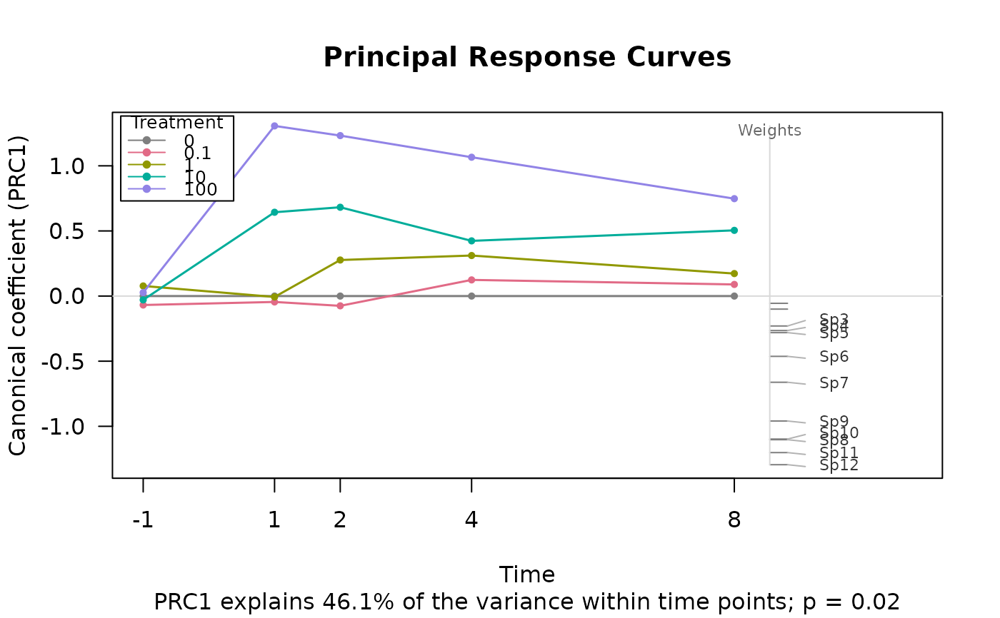

How the communities of treated samples diverge from those of a control
over time, summarized as one curve per treatment (van den Brink & ter
Braak 1999). The method is a partial redundancy analysis,
rda(counts ~ treatment:time + Condition(time)): the effect of time is
removed, and what remains is the treatments' effect at each time point.
Each treatment's curve is its canonical coefficient at each time point,
measured from the control (whose curve is 0), and each feature's weight
says how closely its abundance follows the curves. Gives the same results
as vegan::prc(), with permutation tests of the first axis and of all
axes as anova(vegan::prc(...), first = TRUE) and anova(...).
Usage
principal_response_curves(
counts,
treatment,
time,
data = NULL,
control = NULL,
margin = 1L,
norm = "none",
pseudocount = NULL,
n_axes = 1L,
scaling = "symmetric",
permutations = 999L,
strata = NULL,
plots = NULL,
seed = 0L,
cpus = n_cpus()
)Arguments
- counts
A numeric matrix of feature abundances (samples \(\times\) features), or any of the table types listed under "Input Types".
- treatment
Each sample's treatment: a vector or factor with one value per sample (matched to the samples by name when both are named, else in the same order), or, with
data, the name of one of its columns. One of its values is the control (seecontrol).- time
Each sample's time point, given as
treatmentis. A factor's levels set the order of the time points; numbers are sorted, and other values are taken in sorted order (give a factor to set their order). Every time point is a level: time is not treated as a number.- data
Sample metadata: a data frame with one row per sample, holding the columns named in
treatment,time,strataorplots. Rows are matched to the samples incountsby row name, and rows for other samples are ignored; without row names, they must be in the same order as the samples. Default:NULL.- control
The control treatment: one of the values of
treatment. Default:NULL, the first level oftreatment(its first value in sorted order, if not a factor), as invegan::prc().- margin
The margin containing samples.
1if samples are rows,2if samples are columns. Ignored whencountsis a special object class (e.g.phyloseq). Default:1- norm
Normalize the incoming counts before the PCA. Options are:
'none': No transformation.'percent': Relative abundance (sample abundances sum to 1).'chord': Each sample scaled to unit length (Euclidean norm 1).'hellinger': Square root of relative abundance (the Hellinger transformation).'binary': Presence/absence (each count is either 0 or 1).'clr': Centered log ratio, giving an Aitchison PCA.'rclr': Robust centered log ratio. Zeros stay 0.'log': Log relative abundance (log-TSS), withpseudocountadded to every value first.
Default:
'none'.- pseudocount
Value added to counts to handle zeros when
norm = 'clr'or'log'. Ignored for other normalization methods. See Pseudocount section.- n_axes
The number of principal response curves (axes) to return. Default:
1, the method's convention: one curve per treatment. This is the exception to ecodive's default of 3 axes for ordinations. Reduced, with a warning, to the number of constrained axes.- scaling
How the coefficients and weights are scaled, as in
vegan'ssummary()andplot()of aprc()result:vegan's scaling1('sites'),2('species') or3('symmetric').'form'and'covariance'are accepted for 1 and 2. The product of a coefficient and a weight is the same in every scaling. Default:'symmetric',vegan's default forplot()(itssummary()defaults to'sites').- permutations
The number of random permutations for the tests, or a matrix with one permutation of the samples per row (such as
permute::shuffleSet()returns).0runs no tests. Default:999.- strata
Permute samples only within these groups (blocks): the name of a column of
data, or a vector with one value per sample.strata = time, for instance, permutes the samples of each time point among themselves. Give at most one ofstrata,plotsand apermutationsmatrix. Default:NULL.- plots
Permute whole plots (the experimental units, such as the ponds or ditches sampled at each time point) instead of samples: the name of a column of
data, or a vector with one value per sample. Each permutation shuffles the plots, keeping each plot's series of samples together, aspermute::how(plots = Plots(strata = plots, type = "free"), within = Within(type = "none"))does invegan. Every plot must have one sample at each time point. Default:NULL.- seed
The random seed for the permutations: an integer. Default:
0.- cpus
How many parallel processing threads should be used. The default,
n_cpus(), is the CPU cores this R process may use, within any limits set on it. Results are the same for anycpus.
Value
A list of class ecodive_prc:
coefficients: A data frame with one row per treatment and time point, control first and in time order within each treatment:treatment,time(factors), and one column of canonical coefficients per axis,PRC1,PRC2, etc. The control's are 0.NAfor a treatment with no samples at that time point, and for every treatment at a time point with no control samples.vegan::summary(prc)$coefficients, in long form.weights: The features' weights, one row per feature and one column per axis:vegan::summary(prc)$sp.eig: Each axis's eigenvalue (a variance).prop: The proportion of the variance that each axis explains, not counting the variance that time explains, as inrda().test: The permutation tests: a data frame with rowsPRC1(the first axis) andall(all constrained axes), and columnsdf,variance,F,zandp_value.NAwhenpermutations = 0, andFtoo when the model leaves no residual degrees of freedom.df_residual,residual: The residual degrees of freedom and variance, the denominator of both tests.F_perm: The permuted F statistics: one row per permutation and one column per test.n_perm: The number of permutations.permutation: How samples were permuted:'free','within strata','whole plots'or'supplied matrix'.scaling: The scaling ofcoefficientsandweights:'sites','species'or'symmetric'.control: The control treatment.rda: The underlying partial RDA, anrda()result withn_axesaxes, whose signs follow the curves' (see "Signs").
Details
Method
With \(Z\) the time points' indicators (the conditions) and \(X\) the
indicators of each treatment other than the control at each time point
(the constraints), PRC is the partial RDA of the normalized table on
\(X\) given \(Z\) (van den Brink & ter Braak 1999): rda(counts, data = d, formula = ~ treatment:time + Condition(time)), which spans the
same model. Its fitted values are each cell's (treatment \(\times\)
time point's) mean, less the mean of its time point, so the site scores
are constant within a cell. A treatment's canonical coefficient at a time
point is its cell's site score less the control's at that time point
(vegan's \(c_{dt}\)), here averaged over the cell's samples (the "wa"
scores of rda(), whose cell means are the fitted scores). The features'
weights \(b_k\) are the species scores, so that
\(b_k c_{dt}\) approximates the change in feature \(k\)'s
(normalized) abundance under treatment \(d\) at time \(t\), relative
to the control.
Use norm to analyze transformed abundances, such as norm = 'clr' (with
a pseudocount) or norm = 'hellinger'. van den Brink & ter Braak
analyzed \(\log(10 x + 1)\) counts; transform such values yourself and
give them with norm = 'none', the default.
Permutation tests
Both tests are those of vegan::anova.cca() under the reduced model:
all axes: \(F = (\mathrm{SS}_X / q) / (\mathrm{RSS} / \nu)\), for \(q\) constraint columns and \(\nu = n - 1 - \mathrm{rank}(Z) - q\) residual degrees of freedom. This is PERMANOVA of the Euclidean distances between the normalized samples (
permanova()ofeuclidean()), with the indicators of the treatments other than the control at each time point as constraints and time as the condition: the columns ofmodel.matrix(~ time + time:treatment)after time's. (formula = ~ treatment:time + Condition(time)spans the same model, so it has the same F, but it keeps other columns of the aliased model matrix, whose permutations give other permuted F values.)the first axis (
first = TRUEinvegan): \(F = \lambda_1 / (\mathrm{RSS} / \nu)\), with \(\lambda_1\) the first constrained eigenvalue and RSS the residual of the full model.
Each permutation shuffles the rows of the constraints (equivalently, the
samples), removes the conditions from them, and refits the model, so that
the p-values equal vegan's for the same permutations. Samples sampled
repeatedly are not independent, so permute whole plots (plots) or
within time points (strata) rather than freely; vegan's own
restricted designs (such as Within(type = "series")) can be given as a
permutations matrix from permute::shuffleSet().
Signs
Each axis is flipped so that its coefficient with the largest absolute
value is positive (the first such, if tied), and the features' weights
and the rda element's scores, loadings, biplot scores and centroids are
flipped with it. So the curves mostly rise from the control, and their
signs may be the reverse of vegan's.
Matching vegan
coefficients and weights are vegan's summary(prc(...), scaling = scaling) (up to each axis's sign), and eig its eigenvalues. Where a
time point has no control samples, vegan::prc() drops some other
treatment's column and reports coefficients relative to that treatment;
here they are NA, with a warning. The test statistics and p-values are
those of anova(prc, first = TRUE) and anova(prc) for the same
permutations.
Input Types
The counts parameter is designed to accept a simple numeric matrix, but
seamlessly supports objects from the following biological data packages:
phyloseqrbiomSummarizedExperimentTreeSummarizedExperiment
For large datasets, standard matrix operations may be slow. See
vignette('performance') for details on using optimized formats
(e.g. sparse matrices) and parallel processing.
Pseudocount
The pseudocount parameter is only relevant when norm = 'clr'
or norm = 'log'.
Zeros are undefined in the centered log-ratio (CLR) transformation and
in the log of proportions. If norm is 'clr' or
'log', pseudocount is NULL (the default), and
zeros are detected, the function uses half the minimum non-zero value
(min(x[x>0]) / 2) and issues a warning.
To suppress the warning, provide an explicit value (e.g., 1), or
replace the zeros first with replace_zeros(), whose
result needs no pseudocount.
Why this matters: The choice of pseudocount is not neutral; it acts as a weighting factor that can significantly distort downstream results, especially for sparse datasets. See Gloor et al. (2017) and Kaul et al. (2017) for open-access discussions on the mathematical implications, or Costea et al. (2014) for the impact on community clustering.
See aitchison for references.
References
van den Brink, P. J., & ter Braak, C. J. F. (1999). Principal response curves: analysis of time-dependent multivariate responses of biological community to stress. Environmental Toxicology and Chemistry, 18(2), 138-148. doi:10.1002/etc.5620180207
Legendre, P., Oksanen, J., & ter Braak, C. J. F. (2011). Testing the significance of canonical axes in redundancy analysis. Methods in Ecology and Evolution, 2(3), 269-277. doi:10.1111/j.2041-210X.2010.00078.x
Examples
# Four treatments and a control, each in two plots, at five times.
set.seed(1)
meta <- expand.grid(plot = 1:10, time = c(-1, 1, 2, 4, 8))
meta$dose <- rep(c(0, 0.1, 1, 10, 100), 2)[meta$plot]
effect <- outer(log1p(meta$dose) * (meta$time > 0) / (1 + meta$time / 4), 1:12)
counts <- matrix(rpois(50 * 12, exp(2 + 0.05 * outer(meta$time, 1:12 - 6) - 0.05 * effect)), 50)
colnames(counts) <- paste0('Sp', 1:12)
rownames(counts) <- rownames(meta) <- paste0('S', 1:50)
prc <- principal_response_curves(
log1p(counts), 'dose', 'time', meta, plots = 'plot', permutations = 99 )
prc
#> Principal Response Curves: 50 samples, 4 treatments (control '0'), 5 time points
#> Variance: time 2.798 (54.0%), treatment × time 1.643 (31.7%), residual 0.7361 (14.2%)
#> PRC1: eigenvalue 1.096, 46.1% of the variance within time points
#> Scaling: symmetric
#>
#> Permutation tests (99 permutations, whole plots):
#> df variance F p_value
#> PRC1 1 1.096 37.23 0.02
#> All axes 20 1.643 2.79 0.03
#> Residual 25 0.7361
#>
#> Coefficients on PRC1 (treatment × time):
#> -1 1 2 4 8
#> 0.1 -0.0687 -0.0452 -0.0750 0.1240 0.0892
#> 1 0.0776 -0.0069 0.2768 0.3112 0.1727
#> 10 -0.0294 0.6435 0.6819 0.4238 0.5045
#> 100 0.0268 1.3064 1.2320 1.0660 0.7479
#> Largest weights on PRC1: Sp12 -1.295, Sp11 -1.202, Sp8 -1.103, Sp10 -1.098, Sp9 -0.959, Sp7 -0.662, Sp6 -0.463, Sp5 -0.281, …
plot(prc)

# The coefficients, ready for ggplot2.
head(prc$coefficients)
#> treatment time PRC1
#> 1 0 -1 0.00000000
#> 2 0 1 0.00000000
#> 3 0 2 0.00000000
#> 4 0 4 0.00000000
#> 5 0 8 0.00000000
#> 6 0.1 -1 -0.06866601